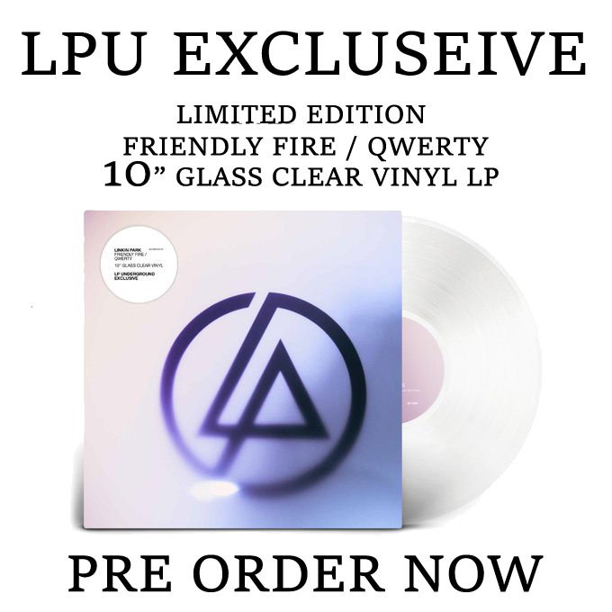
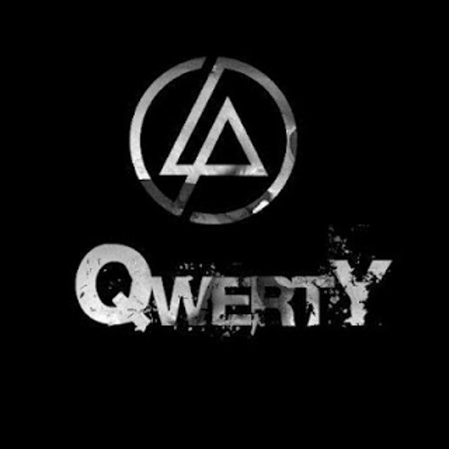

Les dernières actualités
LPU : Vinyl "Friendly Fire / Qwerty" (Edition Limitée)
Le fan club de Linkin Park dispose d'une précommande pour un vinyl en Edition Limitée Blanc de "Friendly Fire / Qwerty" ! Cette édition est limitée à 1 000 exemplaires ! Et sortira au alentours du 31 Mai 2024.
vous pouvez acheter un album sur différentes sources.
Lire plus...QWERTY officiellement en ligne avec sa vidéo live !
En 2006, le groupe sortait de manière rapide un nouveau titre nommé "QWERTY". Titre qui n'aura été joué que très peu de fois après sa sortie, et qui aura disparu rapidement par la suite.
Le titre n'avait jusque là qu'été officiellement sorti en audio via leur fanclub LPU, et une vidéo live de MTV, de basse qualité. Désormais, le titre est officiellement disponible pour tous dans l'album complile "Papercuts" et sur les plateformes de streaming
Lire plus...L'album compilation "PAPERCUTS" en précommandes, avec son lot d'éditions limitées !
_alt_2794.gif)
Linkin Park a mis en place une compile de ses titres les plus forts nommée "Papercuts". Cette compilation contient 18 titres les plus connus du groupe, ainsi que 2 titres très spéciaux !
Tout d'abord "Qwerty", qui est un fût inédit du LPU pendant des années et qui n'était jamais sortie en album classique jusque là.
Et ensuite, le titre inédit dont nous vous avions déjà parlé précédemment et dont le clip officiel viens de sortir : "Friendly Fire"
Lire plus...